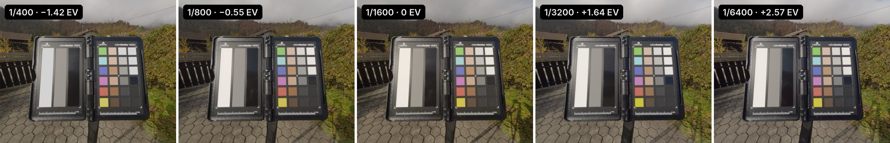
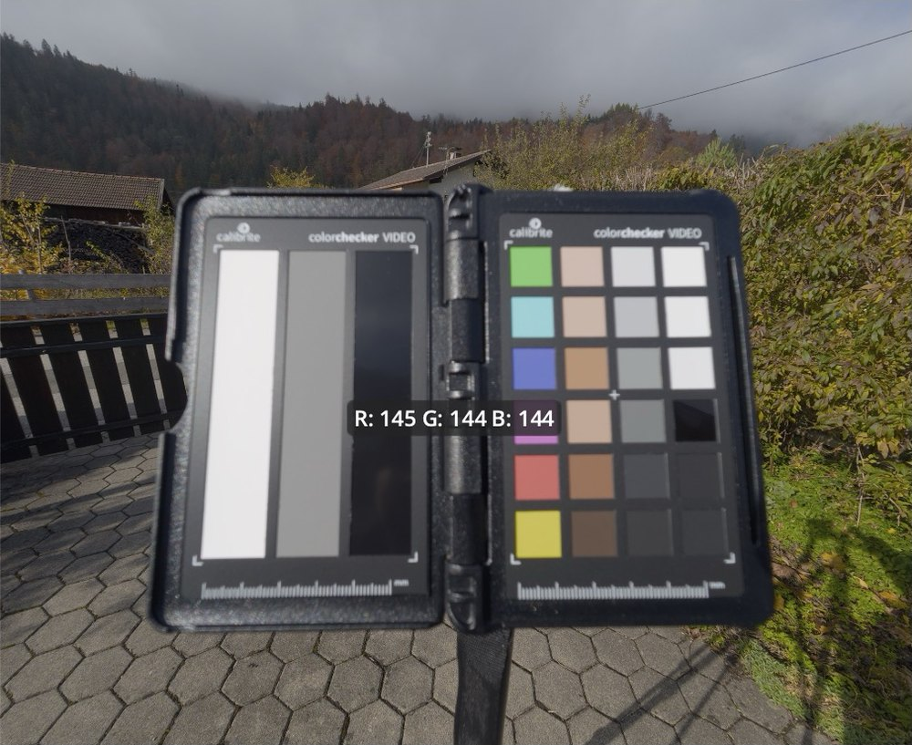
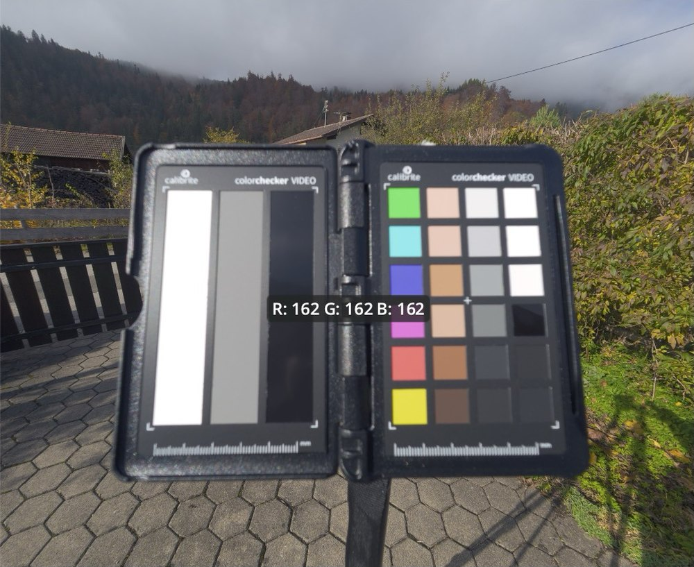
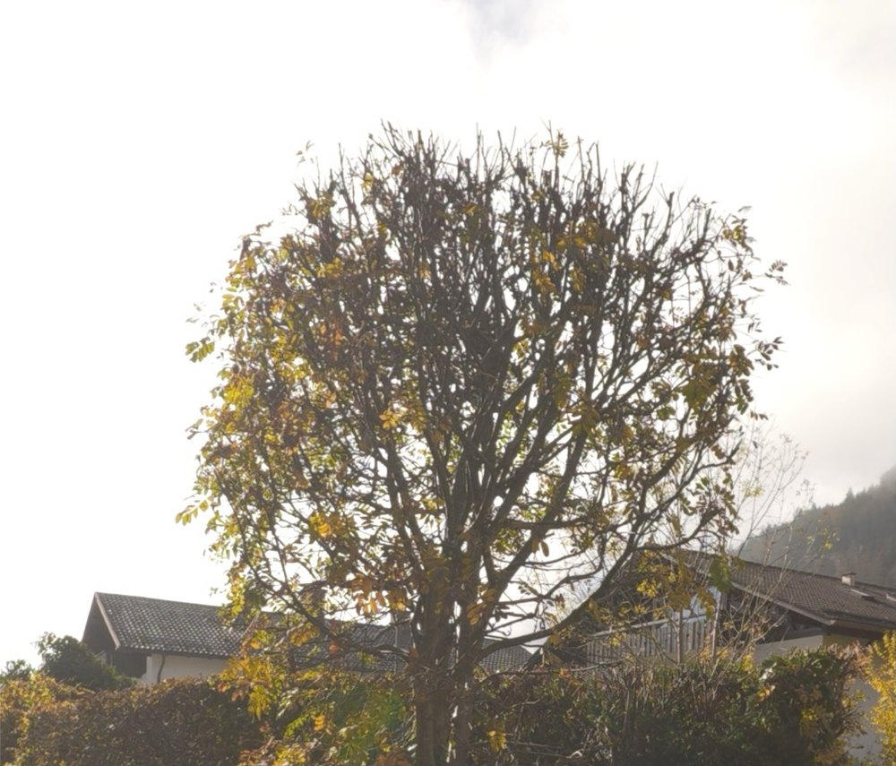
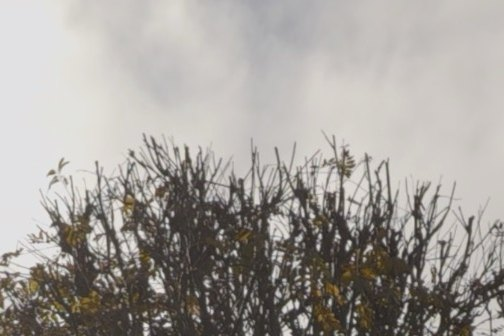
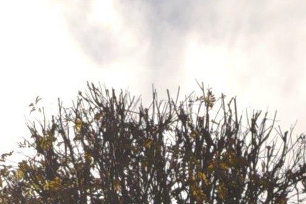
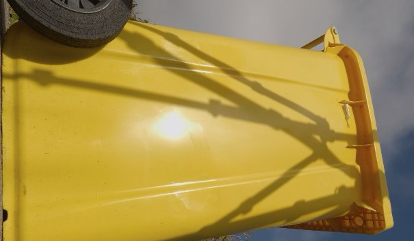
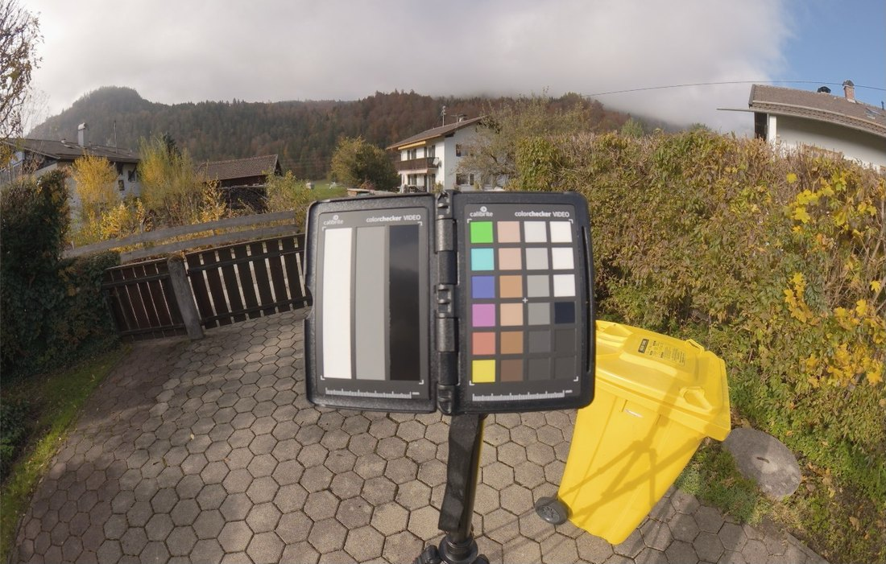
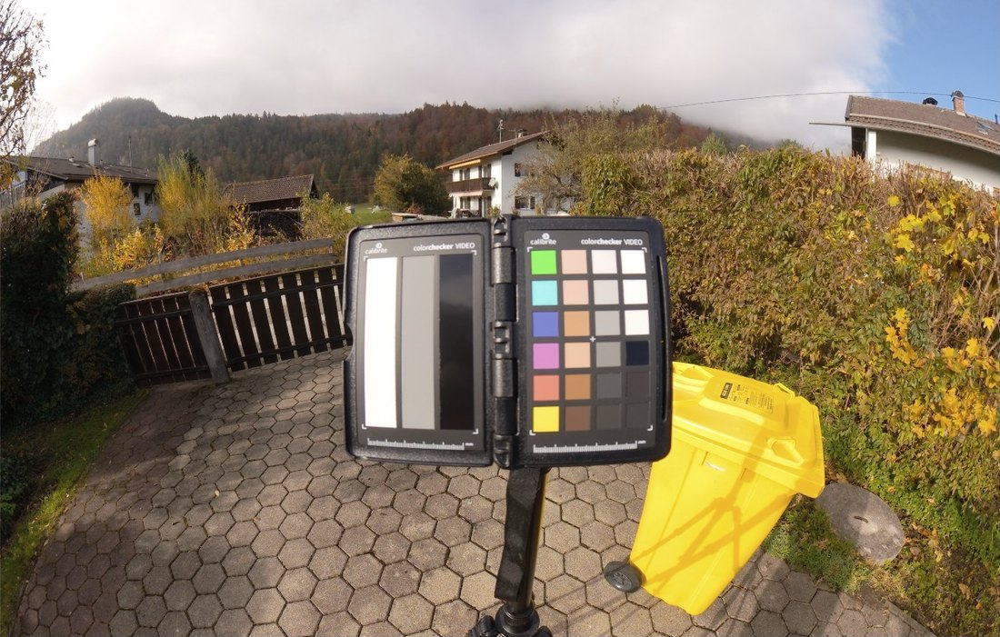

Wenn ich mit meiner Osmo Action 6 und Osmo 360 II aufnehme, filmen diese in DJI's Farbraum D‑Log M.
Beim bearbeiten des Materials, will ich aber im Farbraum DaVinci Wide Gamut arbeiten, denn dieser ist größer als der normale Rec.709 Farbraum.
Dadurch bleiben Farben natürlich und Lichter sowie Schatten behalten ihre Informationen.
Allerdings gibt es keine offizielle Beschreibung der D-Log M Eingenschaften und lediglich eine LUT, welche direkt in den Rec.709 Farbraum übersetzt - und damit viele Informationen des Bildmaterials zurücklässt.
Bisher hilft man sich in Davinci Resolve mit einer Annäherung via "Color Space Transform" - die trifft die Kurve von D-Log M aber nicht genau. Also habe ich die Kurve einfach selbst gemessen.
Das Ergebnis ist eine DCTL mit gemessener Kurve und Farbmatrix
für beide Kameras. Die DCTL ist ausführlich getestet, wie unten beschrieben.
DaVinci Resolve StudioDCTLDJI Osmo Action 6DJI Osmo 360 II
In den Projekteinstellungen unter Color Management →
Lookup Tables auf Open LUT Folder klicken und
DLogM_to_DWG.dctl hineinkopieren. Danach
Update Lists klicken.
Schritt 2 · Erste Node
Projekt auf DaVinci YRGB und Timeline auf
DaVinci WG/Intermediate stellen. In der ersten Node jedes
Clips kommt der Effekt DCTL mit
DLogM_to_DWG.
Schritt 3 · Graden und Output
Nun kann man die CLips einfach bearbeiten. Am Ende jedes Node-Trees kommt eine CST nach Rec.709. Für die DCTL, wähle ein custom DaVinci Tone Mapping mit max. Input von
300 nits.
Hintergrund
Warum nicht einfach CST ?
DJI hat für D‑Log M weder Kurve noch Farbraum veröffentlicht.
In Guides sieht man daher häufig eine der folgenden zwei Optionen:
CST mit „DJI D‑Log“ als Eingangs-Gamma.
Das ist naheliegend, aber falsch. D‑Log M ist nicht D‑Log und kein "echtes" Log Profil. Das Bild wird kontrastreich und übersättigt.
CST mit „Rec.709“ als Eingangs-Gamma.
Das Ergebnis sieht der DJI-LUT ähnlich, drückt aber die Lichter
zusammen. Im oberen Bereich wird aus einer echten Blende nur
eine halbe (im vergleich zur LUT). Belichtungskorrekturen fühlen sich dadurch falsch
an, und der Himmel brennt schnell aus.
Gemessen habe ich mit meinem ColorChecker Passport:
Belichtungsreihen im Tageslicht und unter einer Lampe, jeweils mit fester ISO und festem Weißabgleich.
Die Wolken haben das Licht zwischendurch minimal verändert. Das ließ sich aber herausrechnen, weil die Osmo Action 6 ihren eigenen Belichtungsmesswert in jedem Bild mitspeichert.
Für die Osmo 360 II wurde eine eigene Reihe bei konstantem Licht aufgenommen, da der Sensor Belichtung anders berechnet.
Die Farbmatrix der Osmo Action 6 wurde aus der offiziellen DJI-LUT berechnet. Die Osmo 360 II habe ich danach an die Action 6 angeglichen.
DCTL Osmo Action 6
DCTL Osmo 360 II
CST (DJI D-Gamut / Rec.709)
CST (DJI D-Gamut / DJI D-Log)
Welcher Codewert steht für wie viel Licht?
Steigung der Kurve: Codewerte pro Blende Licht
Links: für wie viel Licht jeder Codewert steht. Rechts: die Steigung dieser
Kurve, also wie viele Codewerte die Kamera pro Blende Licht verwendet. Das ist
eine Eigenschaft der Kamera-Kodierung, nicht der Szene. D‑Log rechnet mit
nur halb so vielen Codewerten pro Blende wie D‑Log M, Rec.709 in den Lichtern
mit zu vielen.
Tests
DCTL gegen CST.
Alle Vergleiche sind Bildschirmfotos aus DaVinci Resolve Studio 21.
Alle Varianten laufen durch dieselbe Ausgabe-Transformation.
Test 1
Bleibt eine Blende eine Blende?
Dieselben Graukacheln über vier Blenden Verschlusszeit aufgenommen und danach per Belichtungskorrektur ausgeglichen. Mit der DCTL liegen die Aufnahmen auf 0,06 Blenden
genau übereinander. Die CST mit Rec.709 weicht um 0,39 Blenden ab, die
CST mit „DJI D‑Log“ sogar um mehr als eine ganze Blende!
Bei der Omso 360 II sind es sogar nur 0,03 Blenden Abweichung via DCTL.
CST (DJI D-Gamut / DJI D-Log)
CST (DJI D-Gamut / Rec.709)
DCTL
Streuung derselben Graukacheln über die Belichtungsreihe nach
Belichtungsausgleich (Blenden, rms). Kleiner ist besser.
CST (DJI D-Gamut / DJI D-Log)
CST (DJI D-Gamut / Rec.709)
DCTL
Acht Graukacheln über vier Blenden Belichtungsunterschied. Gezeigt ist ihre Helligkeit nach Belichtungsausgleich relativ zu Mittelgrau, in Blenden. Ideal sind waagerechte Linien. Nur die gemessene Kurve der DCTL schafft das.

Fünf Clips der Action 6 von 1/400 bis 1/6400 s, in der DCTL per
„Belichtung EV“ ausgeglichen (Werte aus Verschlusszeit und
Belichtungsmesser der Kamera berechnet). Die Tafel sieht in allen fünf gleich aus,
nur das Rauschen nimmt zu. Dies zeigt auch wie gut die DCTL Fehlbelichtungen ausgleichen kann.
Test 2
Graukeil
Mittelgrau wirde via Offset Farbrad neutral gestellt, danach jede Graustufe nachgemessen. Mit der
DCTL bleiben die RGB-Kanalwerte von Weiß bis Schwarz beisammen. Mit der CST
(Rec.709) driften die dunklen Kacheln auseinander, und die hellsten
landen bei 255.
DCTL

CST (D-Gamut / Rec.709)

Action 6, 1/1600 s. Mittelgrau jeweils mit Offset neutralisiert. Die
Einblendungen sind Pixel-Messanzeigen aus Resolve.
R
G
B
CST (DJI D-Gamut / Rec.709)
DCTL
R/G/B-Werte aus dem Resolve-Viewer. Δ ist der Abstand der Kanäle, kleiner ist besser. Die gestrichelte Linie markiert Clipping (255).
Test 3
Hoher Dynamikumfang und Kontrastkanten
Genau hier kommt die Stärke der DCTL zum tragen: Während die CST Methode starke Kontrastkanten ausbrennt, kann die DCTL diese besser auflösen ohne dass Weiß ausbrennt. Dadurch wirken Äste vor Himmel weniger "HDR-like" und Wolken zeigen mehr Definition.
DCTLCST (D-Gamut / Rec.709)

DCTL, −1 EV, Detail

CST (D-Gamut / Rec.709), −1 EV, Detail

Action 6, 1/1250 s. −1 Blende kommt über die Exposure im HDR-Rad. Ein
kleiner Teil des Himmels ist schon in der Kamera abgeschnitten, der wird mit
der DCTL bei −1 EV gleichmäßig grau.
Test 4
Sättigung vs. Helligkeit
Gesättigtes Gelb mit Sonnenreflex, meist der Alptraum für Sensoren. Um den Effekt sichtbarer zu machen, habe ich hier sogar überleichtet und später um -1EV abgedunkelt. Mit der DCTL
behält der Reflex seinen Verlauf, auch wenn die Tonne etwas weniger gesättigt ist - aber Sättigung kann man leichter später hinzufügen, als ausgebrannte Highlights entfernen.
DCTL, −1 EV, Detail

CST (D-Gamut / Rec.709), −1 EV, Detail
Action 6, 1/1250 s. Das Gelb kippt in keiner Variante im Farbton. Im
DCTL-Bild bei 0 EV ist eine Pixel-Messanzeige von Resolve zu sehen
(R 255 / G 211 / B 69).
Test 5
Und die DJI-LUT?
Die offizielle LUT ist der bequeme Weg: draufziehen, fertig. Allerdings wird so der kontrastreichen DJI-"Look" zementiert. Per DCTL sieht das Ergebnis fast genauso aus, bewahrt aber die Freiheit Kontrast und Sättigung zu verändern. Die CST methode wirkt dagegen heller und härter, und
die hellsten Kacheln laufen Richtung Weiß zusammen.
Action 6, Clip mit 1/800s. DCTL und CST laufen durch dieselbe Ausgabe-CST mit DaVinci Tone
Mapping, Max. Input 300 nits.
Der Look der LUT ist also kein Vorteil der LUT. Der Unterschied liegt darin,
wo du arbeitest:
Du gradest in DaVinci Wide Gamut statt auf fertigen Rec.709-Werten.
Die LUT liefert schon das Endergebnis, alles danach arbeitet auf Werten, die
für die Rec.709-Anzeige gerechnet sind. Mit DCTL und CST bleibt das Bild
beim Graden im großen Arbeitsfarbraum, die Umwandlung für die Anzeige
passiert erst am Ende.
Belichtung und Weißabgleich verhalten sich richtig.
Weil die DCTL die Kurve trifft, ist eine Blende im Offset auch eine
Blende (Test 1). Auf Rec.709-Werten verschiebt jede Korrektur zugleich den
Look und stößt schneller an die Grenzen von Schwarz und Weiß.
Die Ausgabe bleibt deine Entscheidung.
Tone Mapping und Max. Input stellst du in der Ausgabe-CST selbst ein und
kannst sie später ändern, ohne das Grade anzufassen. Bei der LUT ist der
Look fest eingebaut.
Osmo und Canon landen im selben Arbeitsfarbraum.
Material beider Kameras lässt sich mit demselben Grade und derselben
Ausgabe-CST behandeln.
Die CST allein ist dafür kein Ersatz. Sie hat denselben Aufbau, rechnet aber
mit der falschen Kurve und drückt die Lichter zusammen, daher das hellere,
härtere Bild oben. Die Vorteile des Workflows gibt es erst mit einer
Umrechnung, die am Anfang stimmt. Wer nur schnell ein fertiges
Rec.709-Ergebnis braucht, ist mit der LUT dagegen gut bedient.
Test 6
Vergleich der zwei Kameras
Die 360 II hat mehr Reserve in den Lichtern als die Action 6, deshalb bekam
sie eine eigene Kurve. Umschalten kann man via Drop-down Menu „Kamera“.
Außerdem hat die Osmo 360 II eine eigene Farbmatrix welche die Farben auf die der Action 6 projeziert.
Osmo-360-Clip mit Kurve „Action 6“

Osmo-360-Clip mit Kurve „Osmo 360 II“

Osmo 360 II, gleicher Clip. Mit ihrer eigenen Kurve liegen Himmel und Wolken
höher, die Mitten bleiben gleich.
Grenzen
Für die Farbtafel gibt es keine Referenzwerte, deshalb gibt es keine absolute ΔE-Messung.
Die 360 hat nach der Angleichung etwas kräftigeres Grün und Rot.
Was in der Kamera abgeschnitten ist, kann keine Umrechnung zurückholen.